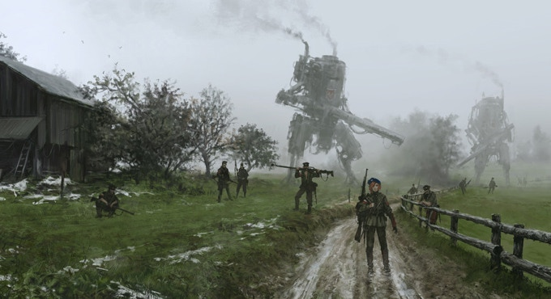
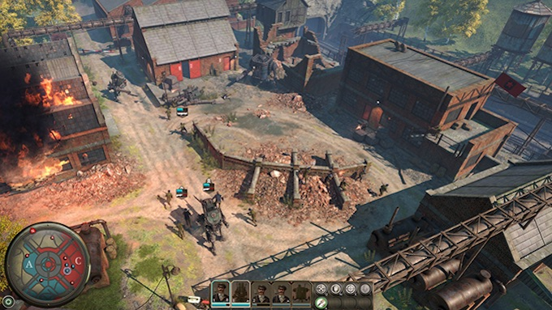

14 marca 2018
Szczątkowe informacje o Iron Harvest przewijały się już w Pixelu, chociażby w dziale Radar numeru #21 z grudnia 2016. Przypomnijmy, że gra ma być RTSem inspirowanym takimi tytułami jak Company of Heroes czy Men at War. Akcja strategii będzie toczyć się w steampunkowych klimatach alternatywnej rzeczywistości lat dwudziestych XX wieku, gdzie pewnym frakcjom zależy na zburzeniu pokoju, który nastał po zakończeniu pierwszej wojny światowej.

Co nas najbardziej powinno cieszyć, to fakt że w produkcję niemieckiego studia King Art zaangażowanych jest dwóch polskich artystów: znany z okładek Pixela grafik Jakub Różalski oraz kompozytor Adam Skorupa, mający na swoim koncie ścieżki dźwiękowe do wielu gier, między innymi Wiedźmina oraz Painkillera.
Nadarzyła się kolejna okazja, by przypomnieć wszystkim o Iron Harvest, albowiem producenci gry wystartowali właśnie ze zbiórką na Kickstarterze. Ich celem jest uzyskanie 450 tysięcy USD, co wydaje się jedynie ułamkiem budżetu oszacowanego na $5,2 mln. W chwili gdy piszę te słowa, od początku zbiórki minęło nieco ponad 24 godziny i autorom udało się zgromadzić 80% wymaganych środków. O powodzenie crowdfundingu można być zatem spokojnym, zwłaszcza że King Art ma za sobą już trzy udane projekty.

Na zakończenie, warto jeszcze wspomnieć, że akcja Iron Harvest toczy się w wykreowanym przez Jakuba uniwersum "World of 1920+" a jej historia zaczęła się około trzy i pół roku temu od opublikowanych w internecie prac graficznych. Odbiły się one ogromnym echem w internecie, o grafikach pisały nawet mainstreamowe media pokroju gazeta.pl. W międzyczasie pojawiła się także gra planszowa Scythe, która powstała również dzięki akcji crowdfundingowej na Kickstarterze.
Do końca akcji na Kickstarterze pozostało 30 dni, a już wiadomo, że zbiórka zakończy się powodzeniem. Na uzbieranie wymaganej kwoty wystarczyło niecałe 36 godzin. Teraz pozostaje pytanie ile z ustanowionych progów uda się odblokować, bo póki co przewidziane są różne cele aż do półtora miliona dolarów.